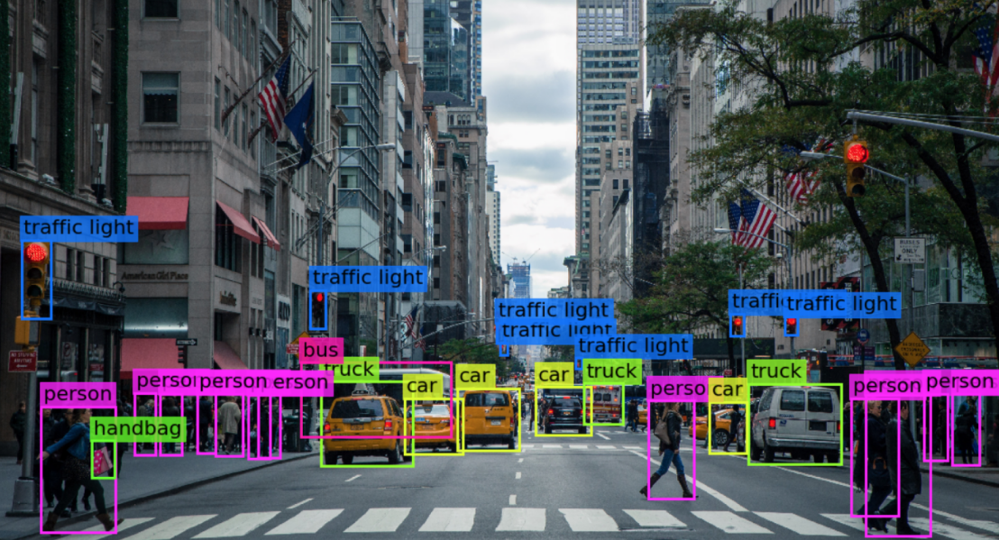
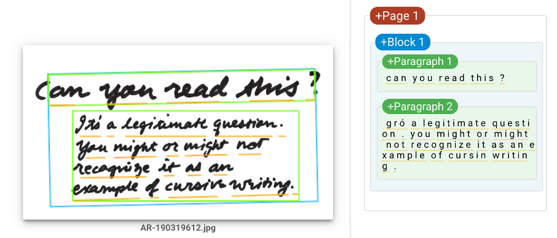

Welcome to NeuraVis!
Here we'll learn about neural networks, how they work. Don't worry if you're not familiar with the concepts of machine learning or neural networks. This guide will walk you through all of them and explain each in the simplest way possible!

What exaclty is a Neural Network?
Neural networks are our attempt on mimicing the workings of a biological brain. The word "neural" comes from neurons, the fundamental unit of a brain. There are billions of neurons in a human brain and there are trillions of connections between them. Together they can solve a lot of problems. Problems that might seem trivial at first. But if those same problems are presented to a computer, they become extremely difficult, or even impossible in some cases. These tasks include:
- Speech Recognition
- Image Content Recognition
- Handwriting Recognition
Speech Recognition
When you hear a family member's or a friend's voice, you can usually recognize them instantly without seeing their face. Or when you're walking through the street and hear your favorite songs playing, you can instantly tell which song it is. How does your brain do that? Well, we don't have an exact answer yet. The workings of a brain is still very much mysterious.
If you try to write a comupter program to recognize a voice, the task suddenly becomes extremely difficult. Do I tell the computer to split up the audio file into different syllables? How does the program recognize individual syllables? Even if it can do that how do we tackle different accents? How do we differentiate between different person's voices?
Although it seems impossible, you might already know that this has been done. How? That's right, through machine learning. Because of machine learning, we have programs that not only can turn our speech into text but also can recognize different voices.
Image Content Recognition
Just like recognizing speech, we have sophisticated programs that can see an image and tell what objects are in that image. This falls under a specific sector of Artificial Intelligence called Computer Vision.
As seen in the picture above, a neural network can learn to recognize basic shapes in a street scene. We also have programs that can recognize person from their faces. This is called face detection and it is commonly used as a biometric security measure.
Handwriting Recognition
Handwriting recognition is just as it sounds in the name. It's the process of recognizing handwritten text and converting them into "computer text". Since in earlier discussion we've seen that we already achieved object recognition, recognizing handwriting seems not so challenging now. But it is still hard for someone who is just starting out to write a program that can recognize handwritten text. Handwriting recognition will be the main focus of learning in this website. Specifically handwritten digit recognition. In the future we'll try to build a neural network from scratch that can recognize handwritten digits. But for now, you can read up about neural networks in the next section.
